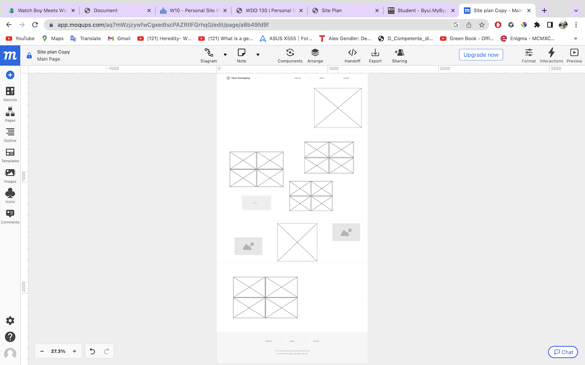

Overview
Purpose
" Why will people come to your site? On my website you will find my film photography journey that tries to bring out the beauty that's in front of us every day. Capturing ordinary life, events and experiences that might go unnoticed until further discovered later on after the development of film is complete. As a photographer I try to stop and observe things that might go unnoticed, textures, nature, light, expressions & surroundings. “ Photography is a way of feeling, of touching, of loving. What you have caught on film is captured forever... it remembers little things, long after you have forgotten everything. “ - Aaron Siskind - What is Film Photography? “ Film photography is where it all began. Before the birth of digital photography, we all took photographs on strips of plastic with layers of emulsion. Further back from that, we used glass and metal sheets which played both the role of light carrier and print. These strips come with a coating of a silver halide solution, protected by a layer of gelatin. The photographs we took burned an imprint into the silver. To get a negative out of this, chemicals and washes stripped the plastic of all its coating. This reveals a reversed image. Dark areas of the scene would show up as transparent on the negative. The grain or 'noise' we see from higher ISOs come from the size of the silver pieces. The bigger the pieces, the better they were at capturing light but that also meant they were big enough to see. Film photography is all about having a physical element with the possibility of experimentation. It relies on the process of conscious image-making because you have a limited number of frames. It is also time-consuming due to the developing and scanning process. These days, film photography is making a huge comeback. There are plenty of reasons why you should shoot film. There are a lot of online communities, collectives and groups on social media. You can even find hashtags like #filmisnotdead where people are aiming to bring film photography back to life. “ "
Audience
" Why will people come to your site? On my website you will find my film photography journey that tries to bring out the beauty that's in front of us every day. Capturing ordinary life, events and experiences that might go unnoticed until further discovered later on after the development of film is complete. As a photographer I try to stop and observe things that might go unnoticed, textures, nature, light, expressions & surroundings. “ Photography is a way of feeling, of touching, of loving. What you have caught on film is captured forever... it remembers little things, long after you have forgotten everything. “ - Aaron Siskind - What questions will your visitors expect your site to answer for them? Each visitor can expect to see the world through my lens, literally, and get a little glimpse of my vision and interpretation of everything that surrounds us. They can see with their one eyes why a film picture would never be the same as a digital one and they will learn more about the process of shooting film. They will learn what “happy accidents mean” and how devastating can be when you wait weeks for some picture to get back from developing and they are nothing from what you expected. "
Branding
Website Logo

Style Guide
Color Palette
Palette URL: https://color.adobe.com/mythemes
| Primary | Secondary | Accent 1 | Accent 2 |
|---|---|---|---|
| [#591C21] | [#044040] | [#8C1F28] |
Typography
Heading Font: Island Moments
Paragraph Font: Lora
What types of activities will visitors want to complete on your site? Come to connect with others, socialize and see different places around the world through film pictures. Anyone would be able to post and tell their stories through pictures and they could socialize with people who share the same passion. They can also meet with other photographers from around they city and share their passion and then post the result and tell the story. “ Kodak sells film, but they don't advertise film; they advertise memories.” Theodore Levitt -
Why will your visitors come to your site instead of another to get this information or complete the actions? Compared to other websites, each visitor is welcomed with open arms on my website to visualize my hobby as an open online gallery, clean with no pop-ups, offers and other distractions, just film photography. Also everyone is welcome to post their work, no matter the experience they have on the field “ I really believe there are things nobody would see if I didn't photograph them.” Diane Arbus -
What information is necessary to complete any actions your site offers? All you need is a film camera and a passion for photography. I really do think the word is different through film pictures, I noticed since I started doing film photography, I see different “ If you use film you can't see it, so you need to feel it.” Hervé Lewis -
Why will your visitors come to your site instead of another to get this information or complete the actions? Compared to other websites, each visitor is welcomed with open arms on my website to visualize my hobby as an open online gallery, clean with no pop-ups, offers and other distractions, just film photography. Also everyone is welcome to post their work, no matter the experience they have on the field “ I really believe there are things nobody would see if I didn't photograph them.” Diane Arbus -
Navigation
Site Map
Content
Home page
Come to connect with others, socialize and see different places around the world through film pictures.
Images for the Home page

[Page 2]
[Written copy for the Page 2 here]
Images for the Page 2

[Page 3]
How to use a film camera? What films are the best? Why do we enjoy taking film pictures?
Images for the Page 3

Wireframes
Home
[Any additional details about home that the wireframe does not make clear]

[Page 2]

[Page 3]
 [Any additional details about page 3 that the wireframe does not make clear]